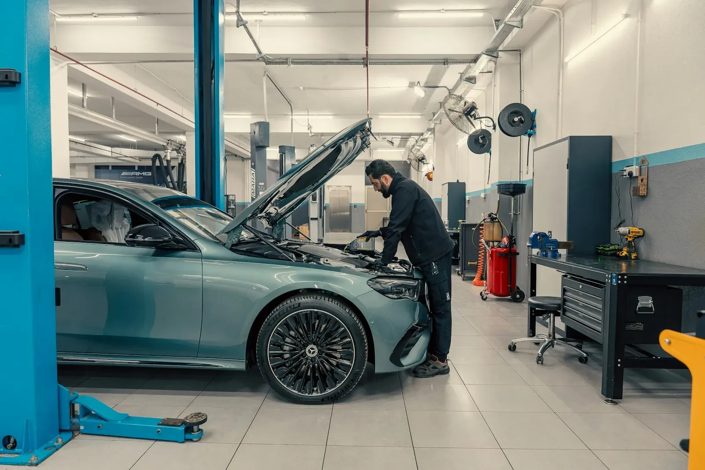
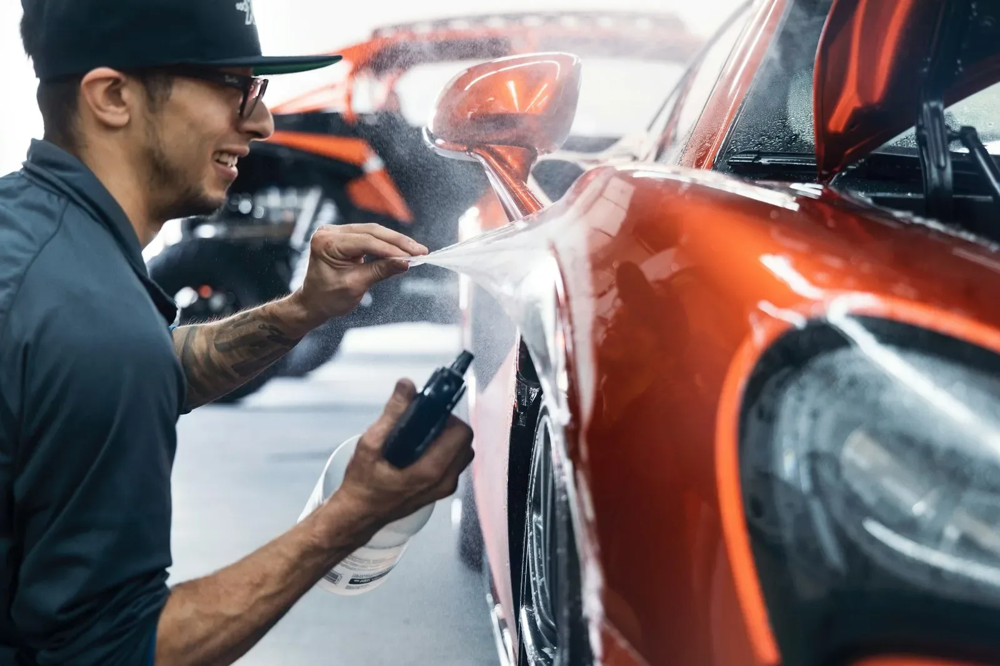
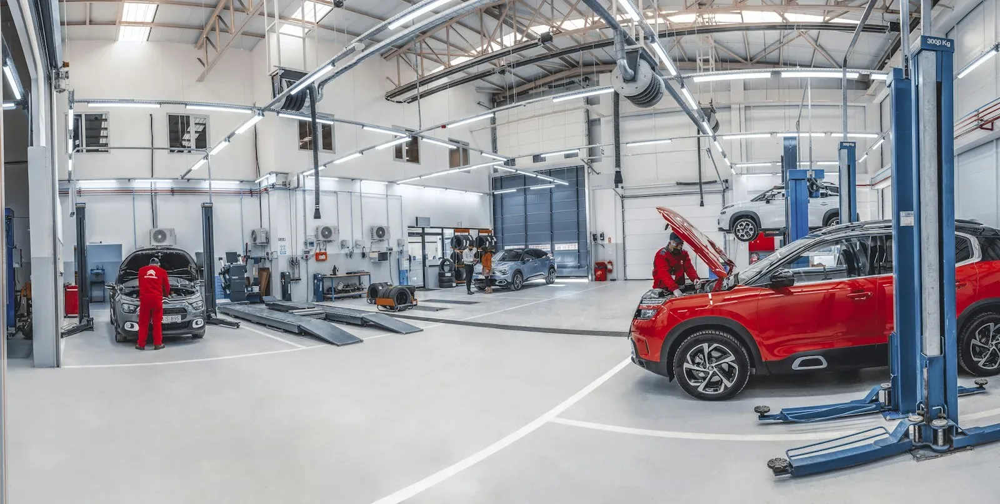
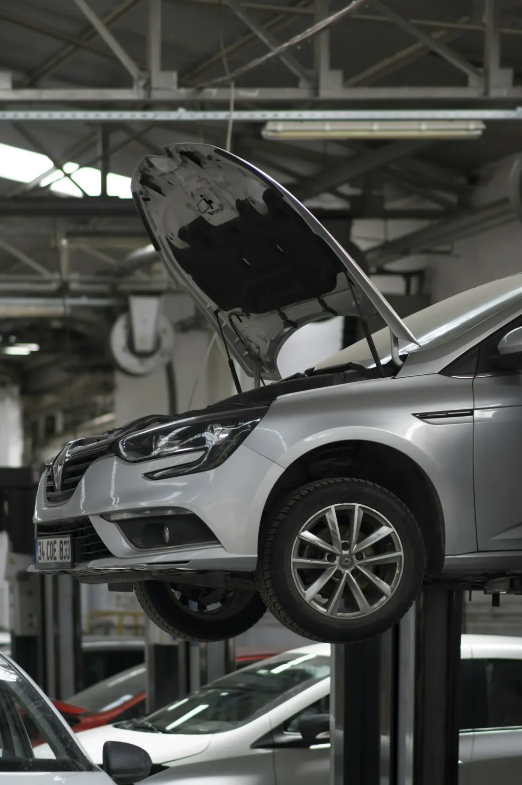
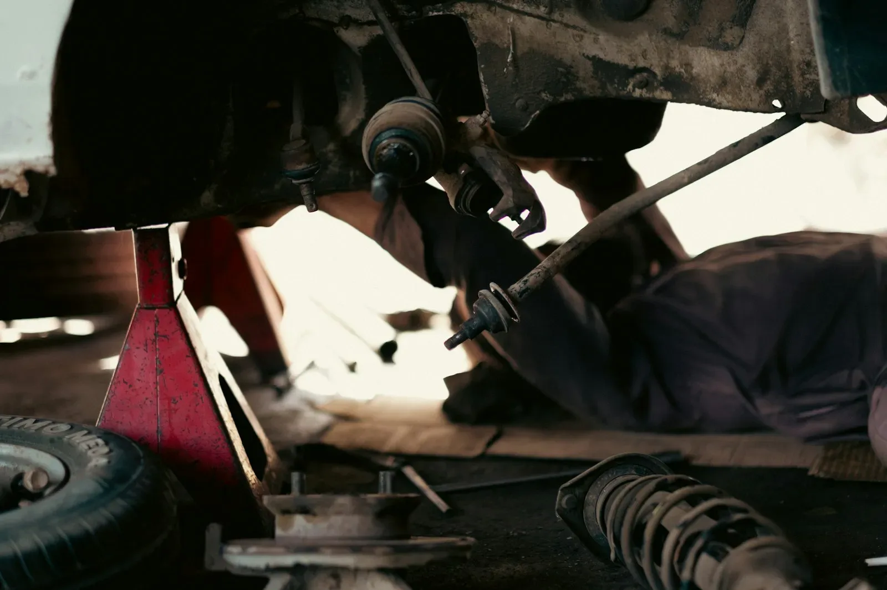
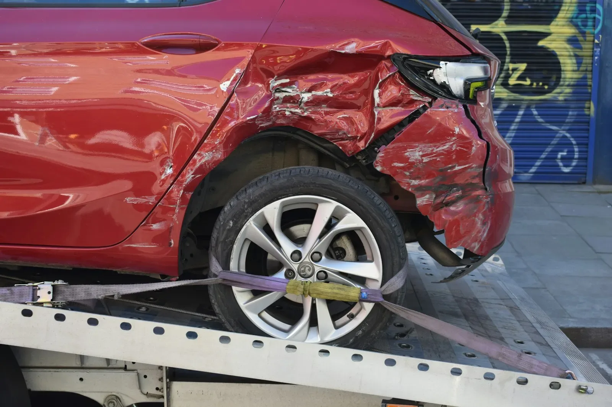

Carrosserie
Achteraf zie je niet meer waar het was.
Van een parkeerdeuk tot schade na een aanrijding. De kleur wordt afgestemd op je wagen, zodat het herstelde stuk niet afsteekt tegen de rest.


Bij Geert De Vos kan je auto terecht voor wat onder de motorkap zit én voor de carrosserie. Je hoeft er niet mee naar twee verschillende plaatsen.

Garage
CarrosserieEen tik vooraan raakt vaak ook iets erachter. Omdat garage en carrosserie hier onder hetzelfde dak zitten, wordt in één keer hersteld wat mechanisch stuk is en wat aan de buitenkant beschadigd is. Jij brengt je wagen één keer binnen en hebt één aanspreekpunt: Geert.



Een onderhoud op tijd voorkomt de meeste pannes. En geeft je wagen toch kuren, dan wordt eerst rustig gezocht waar het aan ligt.
Van een parkeerdeuk tot schade na een aanrijding. De kleur wordt afgestemd op je wagen, zodat het herstelde stuk niet afsteekt tegen de rest.

Rijdt de wagen nog, dan mag je hem gewoon langsbrengen. Neem dit mee, dan kan het meteen verder:
Een korte uitleg van wat je auto doet, of een paar foto's van de schade.
Je brengt hem langs op een moment dat past. Dan hoor je wat nodig is en wat het kost.
Pas als jij akkoord bent, wordt eraan begonnen. Duikt er iets op, dan word je eerst gebeld.
Je haalt je wagen op en krijgt uitleg over wat er gedaan is.
Voor een onderhoud of een herstelling wel, dan is er tijd voor je wagen. Wil je gewoon even schade laten bekijken, bel of stuur een foto en spreek een moment af.
Leg het gerust voor. Neem je polis of de gegevens van je verzekering mee, dan wordt samen bekeken hoe je het best te werk gaat.
Dat hangt af van het werk. Een onderhoud is vaak dezelfde dag klaar. Bij schadeherstel hoor je vooraf hoeveel dagen het ongeveer duurt.
Ja. Je krijgt eerst een prijs. Komt er onderweg iets bij, dan word je gebeld voor er verder gewerkt wordt.
Ik maakte deze demo voor jullie om te tonen wat er kan. Na een kort gesprek maak ik er iets veel persoonlijkers van, helemaal naar jullie wens.
Vrijblijvend. Ik kom langs of we bellen.
Op maat, op jullie eigen domein.
Geen voorschot. Jullie betalen pas als alles klaar is.
Hosting, domeinnaam en kleine wijzigingen, zoals nieuwe openingsuren.
Omdat een voorbeeld meer zegt dan een mail. Zo zien jullie meteen wat er kan, en het kost jullie niets.
Nee. Het gesprek is vrijblijvend. Vinden jullie het niks, dan is het daarmee gedaan.
Na ons gesprek staat jullie site binnen 10 tot 14 dagen online.
Zeker. Jullie domeinnaam kan gewoon blijven, de nieuwe site komt in de plaats van de oude.
Nee, dat doe ik op basis van ons gesprek. Eigen foto's zijn mooi meegenomen, maar niet nodig om te starten.